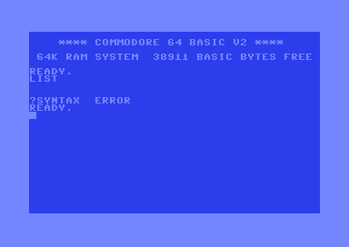

01 · Training
Secret: in training, nothing can hit you
In the training theatre every enemy shot misses, whatever fired it. The same test decides how many shots hit on a real mission, by the style of missions the pilot chose.
Missions
Attacker
Random number3
-
The test in hit_helicopter, the routine that decides whether a shot hits, written again in JavaScript for this page and shown for each of the four values of the pass counter's lowest two bits. A number written with a $ is in hexadecimal, base 16, and most are addresses in the C64's memory: the routine is at $5AE5, and the attackers' chances are read from the game's bytes at $5ADD. A test beside the page runs the game's own routine on the site's copy of the C64's processor for every attacker, style, pass and random number, 32,768 cases, and checks that the page's version agrees on each.
The routine takes a random number from 0 to 15, read from the third voice of the SID, the sound chip, and compares it with the attacker's chance at $5ADD: 4, 8 or always. If that passes, it takes the pass counter, which goes up by one each time round the flight's main loop. The counter's lowest two bits, a number from 0 to 3, must be below the variable zpa_4C for the shot to hit. G2, the BASIC program that sets up the flight, copies zpa_4C from the mission that the front end wrote. There, line 720 of the front end, BEGIN, puts the style plus 1, or 0 in training. A number from 0 to 3 is never below 0, so in training the second test always fails.
On a mission the same test turns the style into a fixed share of hits. A quarter of the shots that pass the first test hit on regular missions, half on volunteer missions and three quarters on volunteer hazardous duty. zpa_4C also sets how many hits stop both engines (more than 7 less zpa_4C), and the cannon's range.
02 · Missiles
Secret: a missile of the wrong kind does nothing
The C64-Wiki's table of weapons gives Hellfires for armour and FFARs for soft targets. The code is stricter: each kind of ground unit can be destroyed by one kind of missile only, and any other kind that hits it does nothing.
| Missile | Unit kinds it can destroy |
|---|
Read from the table at $B5A4 in the flight's code, one byte for each of the sixteen kinds of unit: 1 the FFAR, 2 the Hellfire, 0 the Sidewinder. A unit's kind is a number from 0 to 15 kept in bits 0-3 of its type byte ($5300).
When a missile's explosion ends, the code at $B2F1 looks up its target's kind in $B5A4, which gives the missile that can destroy it. Then it compares the guidance flags of the two missiles, the bits that say how each kind finds its target ($AE12). Only a match destroys the unit. The Hind is the one exception: it is unit 5, and a missile that explodes on unit 5 destroys it whatever its kind ($B309). Kinds 14 and 15 are the only ones the table gives to the Sidewinder, and the five theatres' files do not have a unit of either kind. So a Sidewinder can destroy the Hind and nothing else.
The cannon works another way: it hits by range and aim alone, so it can destroy any unit, given enough rounds.
03 · The cannon
The cannon fires only at a target
The fire button does nothing to the cannon unless the CRT shows the target view. With the map or a message on the CRT, fire moves the CRT on instead.
In the emulator, from a snapshot in flight with the CRT on the map and no target picked, the fire button was pressed ten times. The cannon's 60 rounds stayed at 60. The code is at $3C2D. When the CRT shows the map or a message (the variable zpa_FF is not 0) and a target is picked (zpa_FA = 2), fire steps the CRT on to its next display, with sound 8, and the cannon stays silent. The firing itself starts at $3D60, on the path that only the target view reaches.
Tested live in VICE on 31 October 2026, from the flight's snapshot in Western Europe.
04 · The joystick
Secret: the joystick checks two timers before it reads
The flight's joystick routine throws away what it reads unless two timers are still running the way the program on side 1 of the disk started them. The timers are in CIA 2, one of the C64's two input and output chips.
| Test | Timers A and B, high bytes | Stick held left reads |
|---|
| As the game left them | $48 and $C9, $7F apart | left (zpa_84 = $FF) |
Timer B stopped ($DD0F = 0) | $7C and $C9, $B3 apart | nothing (zpa_84 = 0) |
Tested live in VICE on 31 October 2026, from the flight's snapshot in Western Europe.
The routine joystick ($E40C) reads the stick in port 2 as two directions, across and up or down, then subtracts the high byte of timer B from the high byte of timer A ($E423). Unless the difference is $7D to $80, it sets both directions to 0. The flight never starts those timers, so the gap was set before side 2 was ever read, and holds as long as both timers keep counting from where they started. What the check guards against is not in the code. A copy of side 2 run on its own, without the side 1 programs before it, would fly with a dead stick.
05 · Cheats
A no-fuel POKE for this disk
The C64-Wiki lists three POKEs for Gunship. A POKE writes one byte into memory, and these are typed in during a flight through a freezer cartridge, a plug-in that stops the game and lets you change its memory. On the original disk the ammunition one works, and the fuel one makes the tanks drain faster.
| POKE | What it changes here | Result |
|---|
POKE 23082,189 | In use_store at $5A2A, the instruction that takes one away from the store's count, DEC $53D8,X, becomes one that only reads it, LDA $53D8,X | Unlimited ammunition: in the kit's 6502, five shots leave 60 rounds at 60 |
POKE 22840,5:POKE 22885,5 | The fuel burn at $5937 and $5964 subtracts zpa_05, which is 0 in flight, instead of the burn | No fuel used: both tanks unchanged after 6 seconds, where the game burns 126 from each |
POKE 22837,5:POKE 22882,5 | The wiki's: the tanks' LDA zpa_70 and LDA zpa_72 read zpa_05 instead | The tanks fall faster, by 136 and 339 in 6 seconds |
The fuel POKEs tested live in VICE on 31 October 2026, from the flight's snapshot in Western Europe. The wiki gives its fuel and damage POKEs for another version of the game; on this disk the damage POKEs land in the middle of other instructions.
06 · The listings
Secret: LIST stops before it shows a line of the BASIC
Five of the game's six BASIC programs start with a line that stops LIST before it shows anything. Only B, the debriefing, lists as usual.

G2's bytes put into a freshly reset C64 in VICE and listed, on 31 October 2026.
The line is REM, BASIC's word for a remark that the program skips, then five DEL characters and a shifted L. It is line 0, or line 1 in BEGIN. LIST prints the line's number and "REM", five characters, then the five DELs, which rub them out again. BASIC stores each of its keywords as a single byte. The shifted L is the byte $CC, past the last of the keywords, so LIST cannot print it and stops with ?SYNTAX ERROR. RUN never reaches the problem, because it skips the rest of a line after REM.
07 · The starter
Bug: the starter's sound writes a register the SID does not have
The engine starter's sound effect is the unused effect 0 with its slides, the steps that bend a sound frame by frame, reversed. Its first entry writes to register $50, number 80, of the SID, the sound chip, which has 25 registers.
| Effect | First entry at | Frame | Register | Value |
|---|
The first entry of effects 0 and 9, read from the flight's listing (sound_effects, $EC00). The How it works tab plays both.
The SID's registers start at address $D400. The player writes the value to $D400 plus the register ($9A6C), so the starter writes $10 to $D450. The SID's 32 addresses repeat every 32 bytes from $D400 to $D7FF, so $D450 is register 16, the low byte of voice 3's pulse width. Effect 0's first entry writes the same value, $10, to register 1, the high byte of voice 1's frequency. Whether the stray write is heard depends on voice 3's waveform at that moment, since the pulse width changes only a pulse wave.